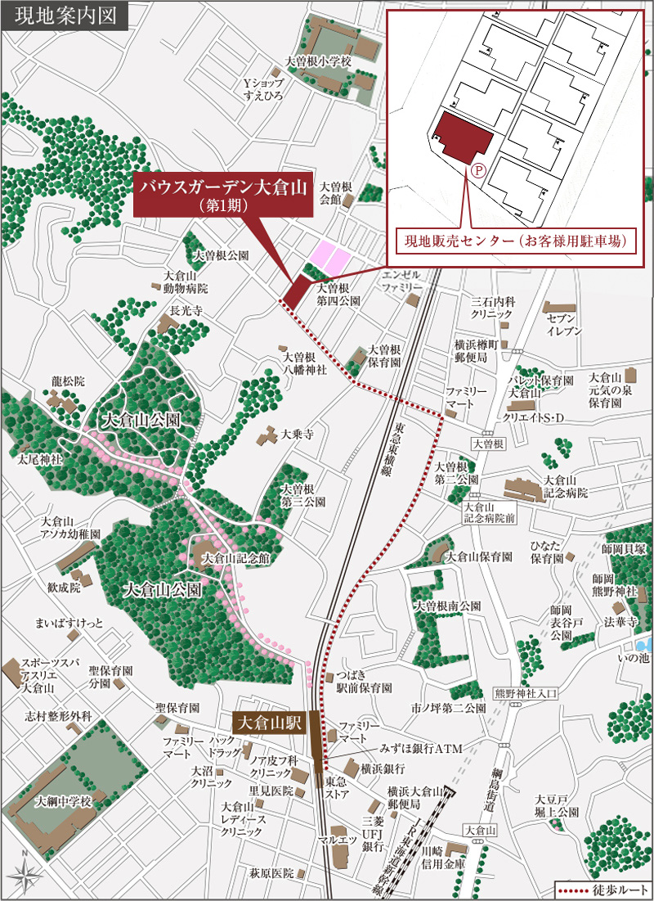

<?php
define("cssinc" ,"map");
define("description" ,"バウスガーデン大倉山ID 公式サイト。東急東横線「大倉山」駅徒歩11分。個性的な30邸が奏でる美邸街区「バウスガーデン大倉山」");
define("map_off" ,"map_on");
define("title" ,"現地案内図｜【公式】バウスガーデン大倉山ID");
?>
<!-- ヘッダー共通部分 読み込み--> <?php include(dirname(__FILE__).'/header.php'); ?>
<!-- ヘッダー共通部分 読み込み END -->
<!-- CONTENTS -->

<div class="titleArea">
	<h2>MAP</h2>
</div>
<div class="titleLine"></div>


<div class="container">
	

</div>
  	<div>
		<ul class="map-btnArea">
			<li class="pc"><a href="javascript:print();"></a></li>
			<li><a href="javascript:close();"></a></li>
			</ul>
	</div>


<!-- /.CONTENTS -->
</div>
<!-- /.blackWrapper -->
<!--
<div class="container">
  <div class="caption">※掲載の完成予想CGは、計画段階の図面を基に描き起こしたもので、形状・色彩・植栽等は実際とは異なります。なお、外観形状細部・設備機器等は表現しておりません。また、表現されている植栽は竣工から初期育成期間を経たものを想定して描いております。施工上の理由および改良のため、変更になる場合がありますので、ご了承ください。</div>
</div>-->
<!-- フッター共通部分 --> <?php include("footer.php"); ?> <?php include("footer_geda.php"); ?>
<!-- フッター共通部分 END-->